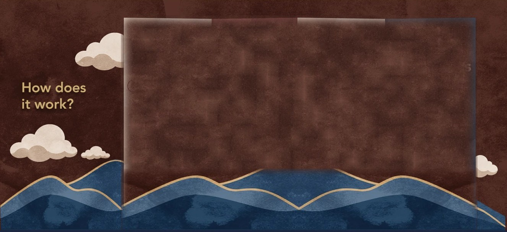

How does it work?
Majoo
Guest

Majoo is an AI-powered chatbot and can make mistakes.
Please note that your chat history will not be saved once you leave this page, and we will not retain any information you provide during this session.